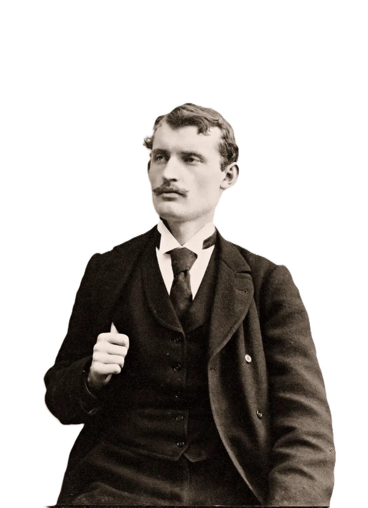

Edvard Munch – malerier
Til hovedsiden
"Study of a Man's Head"
Dette portrettstudiet viser et mannshode med en alvorlig og ettertenksom mine. Munch bruker farger og penselstrøk til å gi ansiktet karakter, i stedet for å fokusere bare på nøyaktige detaljer.
"Dagny Juel Przybyszewska"
Dagny Juel Przybyszewska var norsk forfatter og en del av Munchs kunstnerkrets. I portrettet møter vi henne gjennom Munchs uttrykksfulle farger og stemningsfulle stil. Bildet gir et inntrykk av både personlighet og mystikk.
"The Sun"
I «The Sun» lar Munch solstråler spre seg over landskapet i sterke, klare farger. Motivet virker både kraftfullt og fullt av liv. Verket er en del av de store veggmaleriene Munch laget til Universitetet i Oslo.
"Vampire"
I dette mørke og intense maleriet fra 1890-årene viser Edvard Munch to mennesker i en tett omfavnelse. Kvinnenes røde hår og de mørke fargene gir motivet en mystisk stemning. Munch kalte først verket «Kjærlighet og smerte».
"Self-Portrait with Cigarette"
I dette selvportrettet fra 1895 står Munch med et direkte og alvorlig blikk. Sigarettrøyken og den mørke bakgrunnen gir bildet en drømmeaktig stemning. Farger og penselstrøk gjør portrettet uttrykksfullt og personlig.